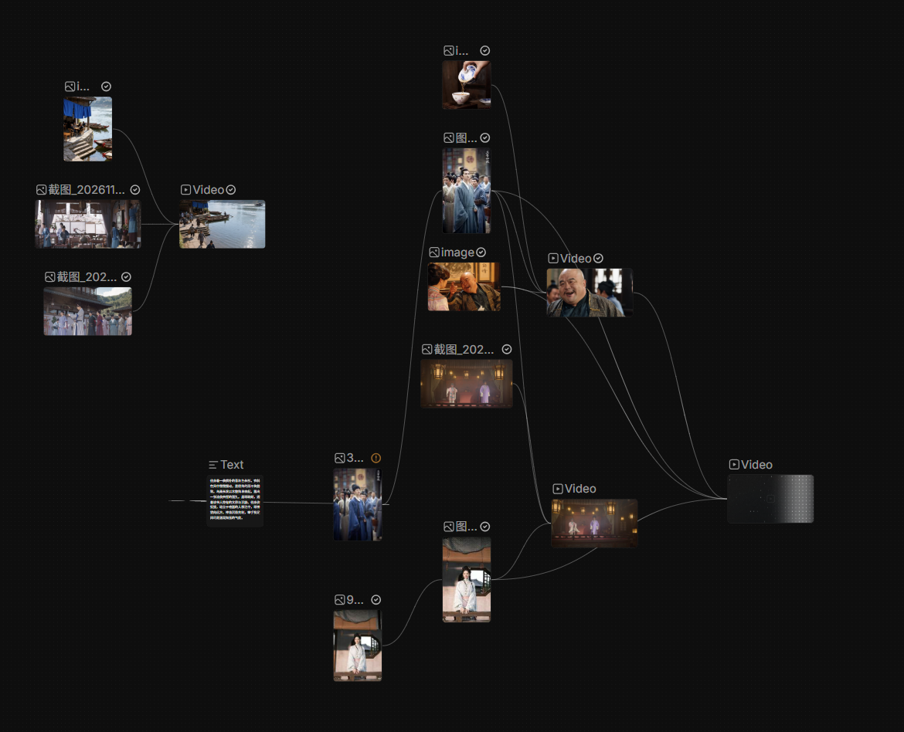

AIGC视频.doc
AIGC / VIDEO MAKING NOTES
让想法，成为镜头。
一次关于素材组织、镜头生成与提示词调整的制作梳理。
01 / PROMPT ITERATION
1.提示词修改
以厨房中的切菜、颠锅和同事反应为内容，对照基础提示词与增加光影描述的提示词。
文生视频 / 提示词对照查看原始表格 ↗
室内建筑 / 光影提示词对照同一空间 · 固定机位 · 调整光照
基础版自然漫射光
提示词
现代简约公寓客厅，室内建筑摄影，固定机位，约1.4米视高，24mm广角，垂直线保持竖直。米白色墙面、浅橡木地板，后方整面落地玻璃门连接绿植阳台；左侧为低矮橡木电视柜、黑色电视及通高开放书架；右侧为奶油色亚麻沙发，前景为木框休闲椅；中央放置椭圆木茶几、陶瓷花瓶与米白色编织地毯。阴天白昼，后窗自然漫射光均匀照亮空间，中性白平衡，弱而柔和的阴影，没有明显直射光斑。木纹与织物细节清晰，真实比例与反射，无文字、无人。
增加光影描述午后定向暖光
提示词
以基础版图像为参考，保持同一房间、机位、镜头、构图、家具数量与位置，保留窗框、阳台、地板、地毯和织物纹理，仅调整自然光照。将阴天漫射光改为晴朗午后的低角度暖金色阳光：阳光从现有后方玻璃门的右上侧斜向进入，在木地板和地毯上形成可辨认的光斑，窗框与家具的阴影朝前景左侧延伸，投影方向统一，边缘带柔和半影。侧向日光提亮椅子扶手与沙发边缘，突出橡木纹理和亚麻织物质感；中性偏冷的天空漫射光填充暗部，亮部不过曝，阴影保留细节，白墙保持自然奶白色。真实全局光照，不新增门窗与灯具，不改变物件，不添加雾气、泛光或全画面橙色滤镜。
02 / WORKFLOW ANALYSIS
2.工作流
以人物、场景和镜头为基础，将光影、声音与后期修改连接成一条可回看的制作路径。
幕布原始结构网图

点击放大查看原图 ↗图像与文本作为生成输入，多段视频继续汇合。该图展示素材连接关系，不据此推断具体模型参数或生成效果。